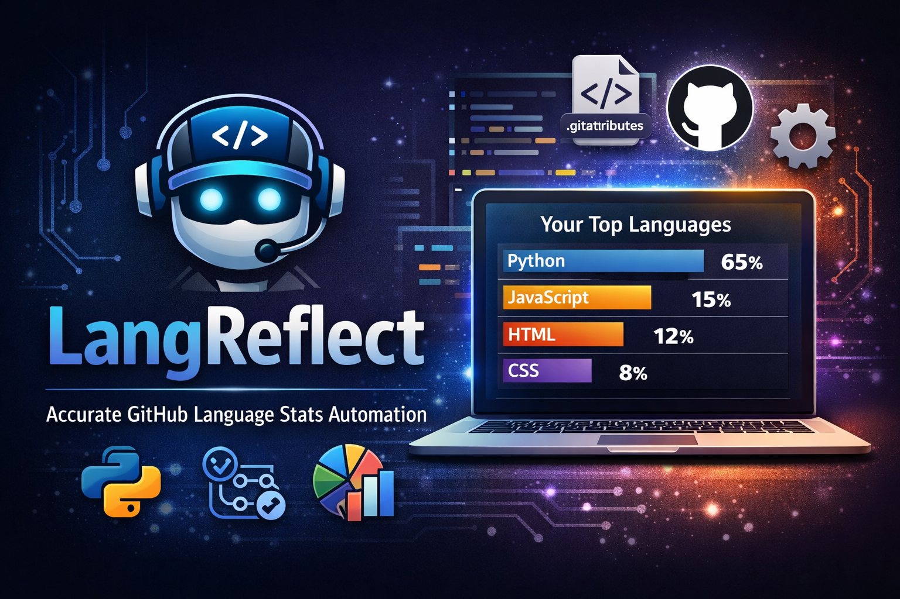
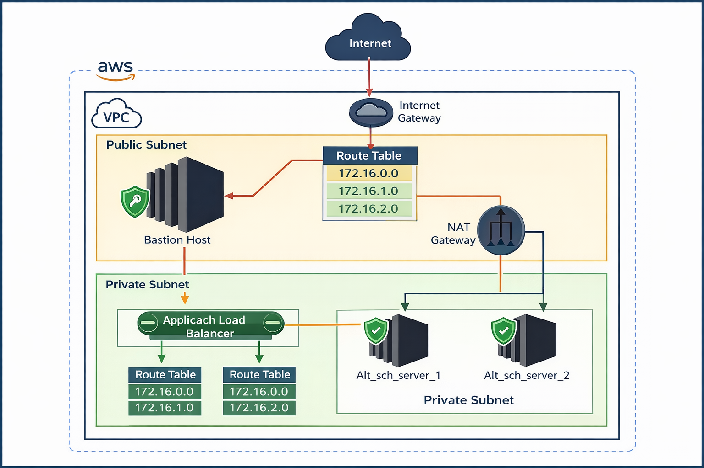
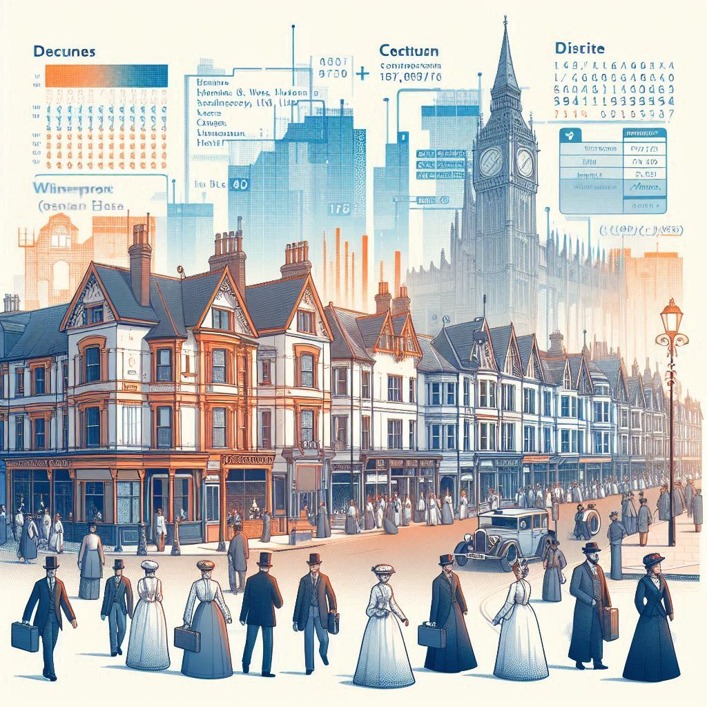

Featured Projects
A collection of data science and machine learning projects showcasing
real-world impact and technical excellencee

nlp
Youtube Comment Sentiment Analysis
NLP-powered system that analyzes sentiment of YouTube video comments through a custom Chrome extension. The system processes comments using TF-IDF vectorizer and a LightGBM model
Python
NLTK
Vectorization
FlaskAPI
MLflow
machine learning
US Visa Approval Predictor
An end-to-end machine learning system that predicts the approval status of US visa applications. The system covers ingestion from MongoDB and a FastAPI-powered web interface for predictions.
Python
MongoDB
Docker
Evidently (drift)
FastAPI

machine learning
LangRflect (GitHub Language Reflect)
An automation tool that ensures GitHub language statistics accurately reflect the real programming languages used in repositories. It generates a visual chart of actual language usage
PyGithub
GitHub Actions
Matplotlib
Automation

Cloud Engineering
Secure Web Application Deployment on AWS
Deployed a secure web application on AWS using a custom VPC with public and private subnets. Automated deployment using Ansible, and configured Load Balancer to distribute traffic across private EC2
AWS
Linux
Ansible
Networking
EC2
VPC

Data Science
A Spy Among Friends: Predicting Viewer Engagement for ITVX Series
This project, part of the ITV Data Science Challenge, predicts how likely users are to watch the ITVX series “A Spy Among Friends.” It applies machine learning to support data-driven marketing decisions.
Python
Sklearn
XGBoost
Matplotlib
EDA
data science
UK Censor Town Analysis
This project presents a comprehensive analysis of a synthetic UK town using census data. The data was generated using Python's Faker library and aims to simulate a real-world census process as it might have been done in the UK in the 1880s.
Python
Faker
Pandas
Seaborn
Matplotlib